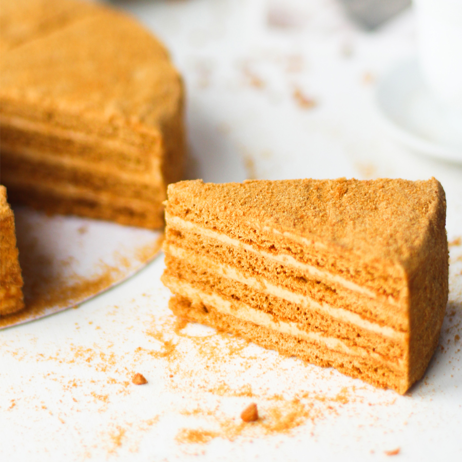

Desserts recipes
CAKE:Honeydew

| Products |
weight |
| Honey |
165 g |
| Egg |
2 pcs. |
| Soda |
9 g |
| Flour |
300 g |
| Sugar |
125 g |
| Sour cream |
450 g |
| 35% cream |
450 g |
| Powdered sugar |
90 g |
- Prepare the cakes. To do this, put the butter together with the eggs, sugar and honey in a bowl and melt in a water bath. Stir constantly with a whisk. The mass should become homogeneous and the sugar should dissolve. *I whisked the eggs with a wire whisk with the sugar, added the softened butter, only then added the honey and began to melt.
- Without removing the bowl from the bath, add the baking soda and wait until it starts to work - a foamy cap appears. Immediately remove the bowl from the bath and stir in the sifted flour. You should have a soft dough without lumps. Divide the finished dough into 8 balls if you are making a 32*12cm rectangular cake, or 9 if you are making a round cake. Place in the freezer for a few hours.
- Lightly sprinkle your work surface with flour and start rolling out each cake. You can also do this on a silicone mat. Prick each crust with a fork all around its circumference. Bake in a preheated 180 degrees Celsius oven for 5 minutes. Remove and trim the edges to the size of the molds while the cakes are still warm. Let the shortcakes cool. Chop the trimmings into crumbs with a blender. This will be the sprinkles for the honeydew.
- Prepare the cream. For this, whisk the cream into a thick, fluffy mass (it should leave a mark from the whisk) and put it in the refrigerator. Now beat the sour cream, sugar and honey into a fluffy mixture. Combine the buttercream with the sour cream, kneading thoroughly with a spatula.
- Assemble the cake of the cakes, smearing each one with cream. Tip: To make the cake even and with a nice cut, I recommend weighing the cream beforehand and dividing it by the number of cakes, leaving a little cream to grease the sides. Use the exact amount of cream for each cake. Sprinkle the cake with shredded crumbs. With a hot, dry knife, cut the cake.